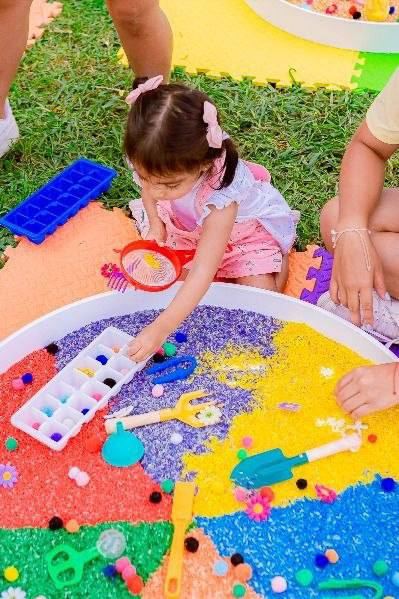

📌 10 ідей чим зайняти дітей вдома: ігри з кінетичним піском 🌸
Ігри з кінетичним піском — це чудова розвиваюча діяльність, яка покращує дрібну моторику, знімає напругу та розвиває творчість у дітей.
🌟 Ідеї для сенсорних ігор:
1️⃣ 🌸 Пісочні замки
2️⃣ 🌟 Сенсорні коробки з піском
3️⃣ 🌸 Ліплення фігурок за допомогою формочок
4️⃣ 🌟 Відбитки штампами (літери, цифри, природні матеріали)
5️⃣ 🌸 Відбитки слідів тварин
6️⃣ 🌟 Пісочні лабіринти (для машинок або кульок)
7️⃣ 🌸 Гра «Секретики» — ховаємо маленькі предмети
8️⃣ 🌟 Ховаємо в пісок ручки або інші предмети
9️⃣ 🌸 Малювання та письмо на піску
🔟 🌟 Сюжетно-рольові ігри (наприклад, «кухня»)
Такі ігри допомагають дитині краще пізнавати світ через дотик, розвивають фантазію та концентрацію.
Перетворіть гру на маленьке відкриття — і навчання стане справжнім задоволенням! ✨
#10ідейдлядітей